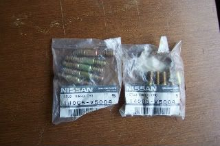

-
Hello again. I am currently changing my valve cover gaskets and my drivers side exhast manifold due to A HUGE CRACK lol.
As i was taking off the nuts from the manifold the threads came right out of the cylinder head! Im thankfull they didnt break however the funny thing was, a few of them were very loose and one is missing like it vibrated loose.
I want to know since the stud itself came out of the cylinder head (with the nut i think the nut is seized) can i just put it back the same way it came out? maybe add some loctite? Or should i go to autozone and find some studs, i hope someone has them locally…i cant wait for shipments with this project.
The intake manifold came off rather nicely, took a little time. Im wondering if i should replace the coolant lines that go to the throttle body, to the heater core, and stuff like that.
advice is nice, thanks guys!My Build Thread -
I would not buy studs from AutoZone.
Get them from the dealer. They are improvement from what
originally came on your car.

I would replace all the coolant and vacuum lines.
You are able to get to them easily since things are apart.Selling left over z31 parts from an 85. -
you can always do the heater core lines later and really you shouldn't be changing them if they are not cracked.862sik wrote: Hello again. I am currently changing my valve cover gaskets and my drivers side exhast manifold due to A HUGE CRACK lol.
As i was taking off the nuts from the manifold the threads came right out of the cylinder head! Im thankfull they didnt break however the funny thing was, a few of them were very loose and one is missing like it vibrated loose.
I want to know since the stud itself came out of the cylinder head (with the nut i think the nut is seized) can i just put it back the same way it came out? maybe add some loctite? Or should i go to autozone and find some studs, i hope someone has them locally…i cant wait for shipments with this project.
The intake manifold came off rather nicely, took a little time. Im wondering if i should replace the coolant lines that go to the throttle body, to the heater core, and stuff like that.
advice is nice, thanks guys!
instead, concentrate on getting the proper manifold studs, and go to nissan to get them. They revised them some time after enough complaints from the dealership service reports indicated that the bolts they used were a bad grade and would crack all the time.
YOU CAN use LS1 manifold bolts, If I'm not mistaken (DeleriousZ will chime in here, he posted this item before:
http://www.thunderracing.com/catalog/?a … 3&pcid=301).
you can order those from a local performance shop.
DON'T skimp on these fasteners, or you'll be sorry down the line. -
those are the correct studs. they're not exactly as they appear in the pics, but they're really really nice hardware. the washers are even belville like the stockers, only about half the thickness.
i'll try and remember to get pics of em installed.

1988 300zxt. gt35, stance, etc. Wheels: Varrstoen ES2 18x9.5 et-13 225/40. 18x10.5 et0 245/40
1990 jetta vr6'd -
thanks guys, my dealership had them in stock. it was 75 for the washers, nuts and studs (6). but my buddie was there so i got wholesale price at 45 bucks.
as for the hoses, what ever hoses that didnt need a super bend i got from kregan universal. but the others ill inspect for cracks and going to have to eat it lol.
now, back to work.My Build Thread -
im pissed, the stud that i thought just fell out actually broke a while back and i didnt know. and the other one that i took out i didnt realize it broke in the head. its the rear one, so now that one has no support…i am going to have to drill it out…gerr!!!My Build Thread -
shitty mate, busted studs are a royal cunt.
edit: pics as promised:
guess who gets to repaint his valve covers!! yayyy lol
lol
1988 300zxt. gt35, stance, etc. Wheels: Varrstoen ES2 18x9.5 et-13 225/40. 18x10.5 et0 245/40
1990 jetta vr6'd -
i noticed i have on that last cylinder hole i have another spot where studs can go into, im assuming it was for like turbo manifolds or something.
i wish i can just get one made so that it fits the other holes. Those 2 bolts didnt budge today, i had the easay out tool from craftsman and it was good until i slipped and then it hit the thread that was exposed, so now it wont come out that easy. My friend is comming over in the morning and he is thinking of just drilling it all out, and tap a new thread. its very tight, i can get my drill in there but its just very tight.
so nothing really accomplished today, i painted the valve covers silver alloy as well as the intake tubing.
Im like :nanan?re going out of my mind, so I stopped working on the car.My Build Thread -
well i got one bolt out, however the other one that was missing to begin with is stuck. AND the extractor broke inside of it!!!!
i got the other manifold from red-zx which i guess is the jdm one that uses the other studs due to the differnt flange. im going to see if a welding shop can chop off the other corners of it and weld it on my manifold lol!
I stopped for today…
On a side note, its easy with 2 people, one pushing and one guiding.My Build Thread -
Yeah, No easy-outing and easy out. Had it happen on my damn NA collector. Ended up going headers. Hope you have better luck.
Coincidentally, I have a 87T motor i just bought, looks like a stud is missing.... Hope i don't have a broken one in ther. How deep are the stud holes supposed to be? Anyone have the measurements?
-
if u went headers, then you still have an issue right?
im probably going to get in there with a dremel.My Build Thread -
aren't all 4 of the rear stud locations drilled an tapped on the heads? i can't remember, but for some reason i remember seeing one or two banks with all 4 holes drilled/tapped.
1988 300zxt. gt35, stance, etc. Wheels: Varrstoen ES2 18x9.5 et-13 225/40. 18x10.5 et0 245/40
1990 jetta vr6'd -
yes thats right. the turbo uses the other stud holes, and one very rare manifold (the one i got from reddzx) uses it.
i was thinking of welding another flange on my manifold lol to catch the other one if i can get this bolt out.My Build Thread -
not adviseable, your crossover pipe wouldn't work unless you put the correct sized spacers on either side of it to make up for the extra distance.
1988 300zxt. gt35, stance, etc. Wheels: Varrstoen ES2 18x9.5 et-13 225/40. 18x10.5 et0 245/40
1990 jetta vr6'd -
oh i was just going to use like the ear of the flange on the other manifold, weld that on to my manifold so that i can take advantage of the other remaining stud holes in the cylinder head.
do these manifolds just crack all the time? cause my car was alwayd missing that top right upper stud....I ASSUMED it was because of force and tention that caused the manifold to crack (hense why im trippin about that last bolt)
but if they do crack all the time should i even worry about that last bolt? or will it even make a difference?My Build Thread

Copyright © 2006–. All rights reserved. Privacy Policy